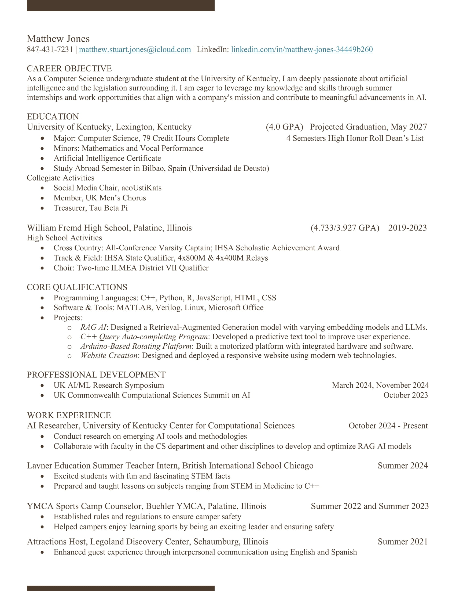

Matthew Stuart Jones
Computer Science Student at the University of Kentucky
Send
Thinking...
Projects
Computer Science Projects
Writing Sample: Web Scraping Public Policy Memo
Ask BAP - Business Fraternity Chatbot
Resume

Curriculum Vitae
Contact
LinkedIn Profile
Email: matthew.stuart.jones@icloud.com